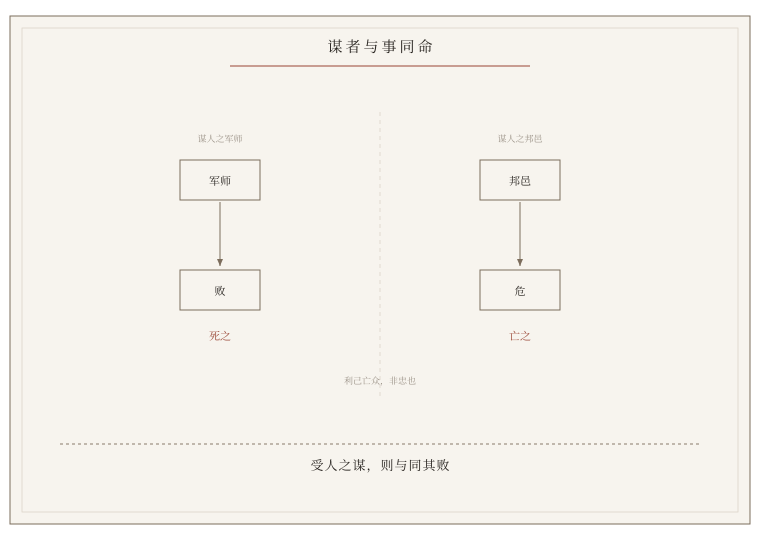

檀弓上 · 三·六十三 · 第 266 课
君子曰：「謀人之軍師，敗則死之；謀人之邦邑，危則亡之。」
说什么事：替人谋划军队的事，败了就要为之死；替人谋划邦邑的事，危了就要为之去国。两句话，一个式子。
落在哪一层：礼，兼及礼数与礼意。论「受人之谋，则与同其败」。
为何编在此位：上节论丧中之财，是「守物」；此节论谋人之责，是「守言」。言出于己而人从之，则败有所归。
【经】君子曰：「謀人之軍師，敗則死之；謀人之邦邑，危則亡之。」
【注】利己亡众，非忠也。言亡之者，虽辟贤，非义退。
【疏】底本此节无疏文。
君子曰 记所闻于君子。非孔子语。
谋人之军师 替人谋军事。军师，军队之事。
败则死之 败则为之死。「之」指所谋之事与其人。
谋人之邦邑 替人谋国邑之政。
危则亡之 危则为之去国。「亡」是去位去国，非逃亡。
利己亡众 图己之利而使众亡。
辟贤 避位让贤。注「虽辟贤，非义退」，谓不可以「让贤」为辞自解。
君子说：「替人谋划军事，事情败了，就为它死；替人谋划国邑之政，事情危了，就为它去国。」
此节只两句话，说的是一件极重的事：说话的人要跟自己的话一起承担后果。
「谋」不是「议」。议者可以旁观，谋者是「人从之而行事」。人既从之，则败不是他的败，是「我们」的败；故谋者不得独全。
两级：军师之败，其祸在众，故以死；邦邑之危，其祸在政，故以去国。死与亡都是「去其位」，一以身去，一以位去。
注辨「亡之」：不是「辟贤」——不是因为贤者当避位，乃「义」当退。这一辨极重要：把「高风亮节」与「引咎去位」分开。前者是让，后者是责。
第一层 谋与议之别 「谋」在此是受任之辞。今人所谓「我只是提个建议」，古人所谓「谋人之军师」——话一经采用，说话的人就进入这件事里面，不再是旁观者。
第二层 死与亡的分等 军师之败，死者众，故谋者以身殉；邦邑之危，所危者政，故谋者以位去。二者皆「不得独免」，而轻重有别。此即礼之「等」：不是一律死，也不是一律辞。
第三层 「非义退」 注「虽辟贤，非义退」。疏无文，而此注自足：若以「让贤」为名而去，则去者无罪，事无人任。故礼许其去，不许其以「让」为名。去，是认责；不是高蹈。
第四层 「君子曰」 此语不出孔子之口，是记者所闻于君子。疏无文，注亦简——底本此节无疏，可见唐人去此不远而无所增益。此亦可注意：不是每条经都有疏，无疏处正须读者自以注文推之。
与今日何干 今日最缺的，是「谋者与事同命」这一层。顾问、参谋、幕僚、咨询，说的都是「供参考」；一旦出事，说话的人先退到「我只是建议」。此节的尺是：你若真被采纳，就不能只做建议者。
| 左 | 右 |
|---|---|
| 谋人之军师 | 受任而人从之 |
| 败则死之 | 以身去 |
| 谋人之邦邑 | 谋国邑之政 |
| 危则亡之 | 以位去 |
| 利己亡众 | 非忠 |
| 辟贤 | 让位之名 |
| 非义退 | 去是认责，非高蹈 |
| 君子曰 | 记所闻，非孔子语 |
画一处军帐与一座城邑并置的远景，视点平。左侧帐中一人在案前指点沙盘、帐外甲士列队待发；右侧城墙一角，城门半开，一人立于门内侧身向外，身后是空着的朝位。两处之间一条土路相连。不写文字、不画人面细节。赭色只用在帐中沙盘上的一枚小旗与城门内侧那方空席的一角。
